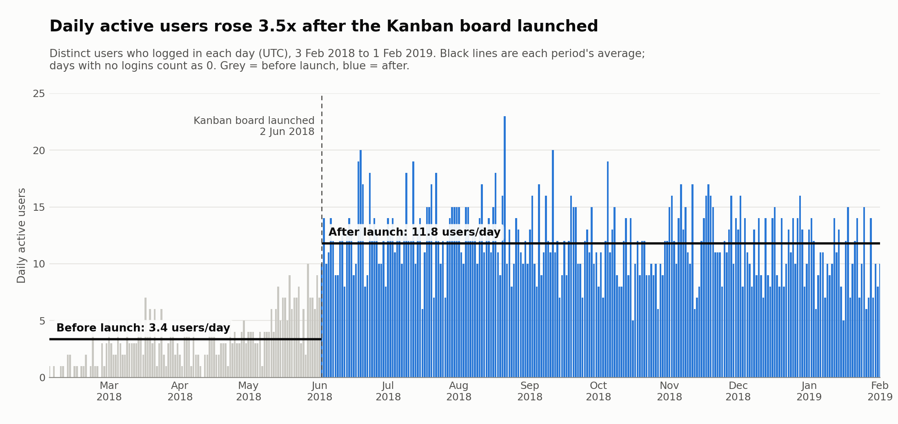
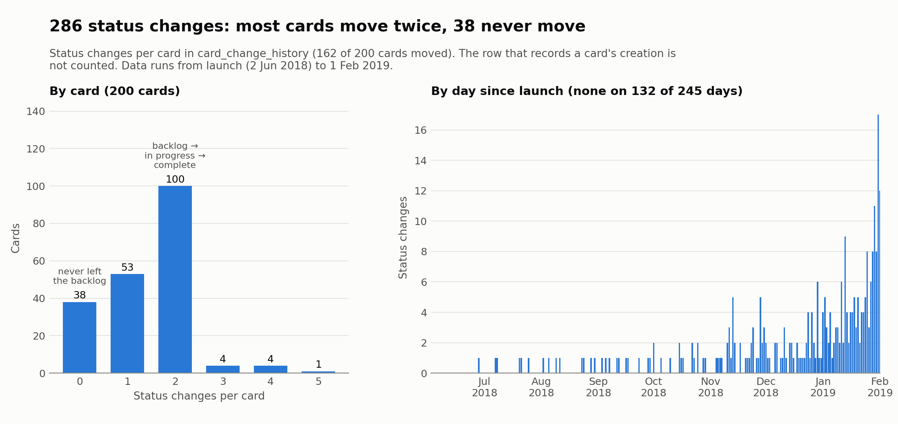

The Kanban board coincided with a 3.5× jump in daily active users. That jump came from a one-off wave of new users, though, and since then growth has stopped and usage is slowly slipping. The three ideas below target the three levers that are left: making each day's visit worth it, making visits social, and restarting signups.

dau_before_after (averages) and dau_daily (bars).user_cohorts).signups_by_month). With about 100 users and almost no newcomers, daily active users slipped
21%, from 12.9 in July to 10.2 in January. Monthly active users stayed at 72–84, so people are not leaving;
they come less often. Stickiness (average daily users ÷ that month's users) fell from 22.8% in May to
12.8% in January (monthly_engagement).card_wait_times). After launch there is one
status change for every 12.5 logins, and no change at all on 132 of 245 days.card_flow_by_month). That could be real adoption or one person clearing a
backlog. We cannot tell, because card_change_history does not record who moved a card.
cards_by_change_count (left) and status_changes_daily (right). Moves are
mostly forward: 167 backlog → in progress, 103 in progress → complete, and only 16 backwards
(status_transitions).3 cards need you today
Yesterday: 2 cards moved by your team · Snooze · Settings
userID to every
card_change_history row. That also lets us answer questions this analysis could not, such as who
drives January's activity.Push: “Ana completed Wiza LLC, ready to invoice”
Status link read-only, revocable
Invite a teammate
Stark, White and Abbott
Updated 2 hours ago
Track your freight with Shiptivity → Sign up free